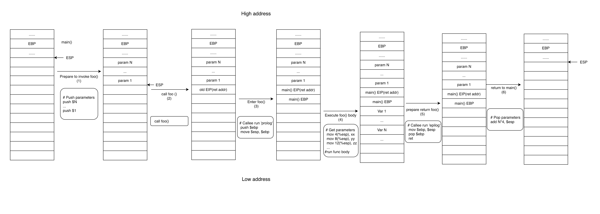
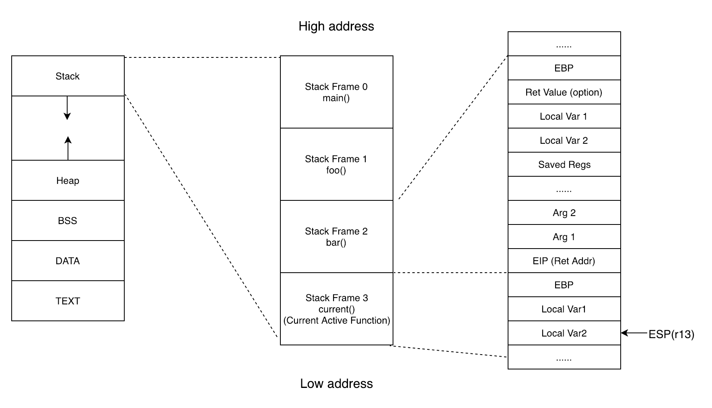
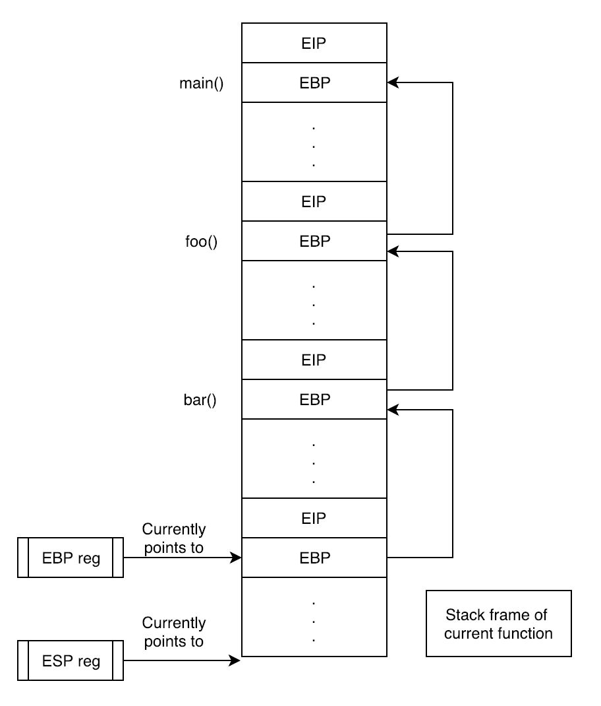
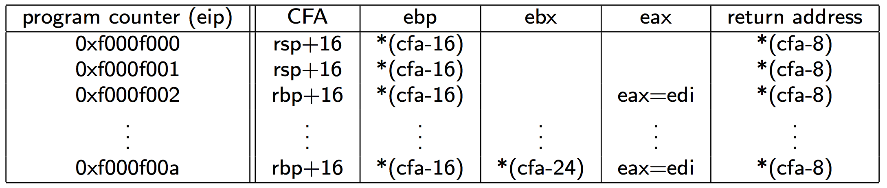
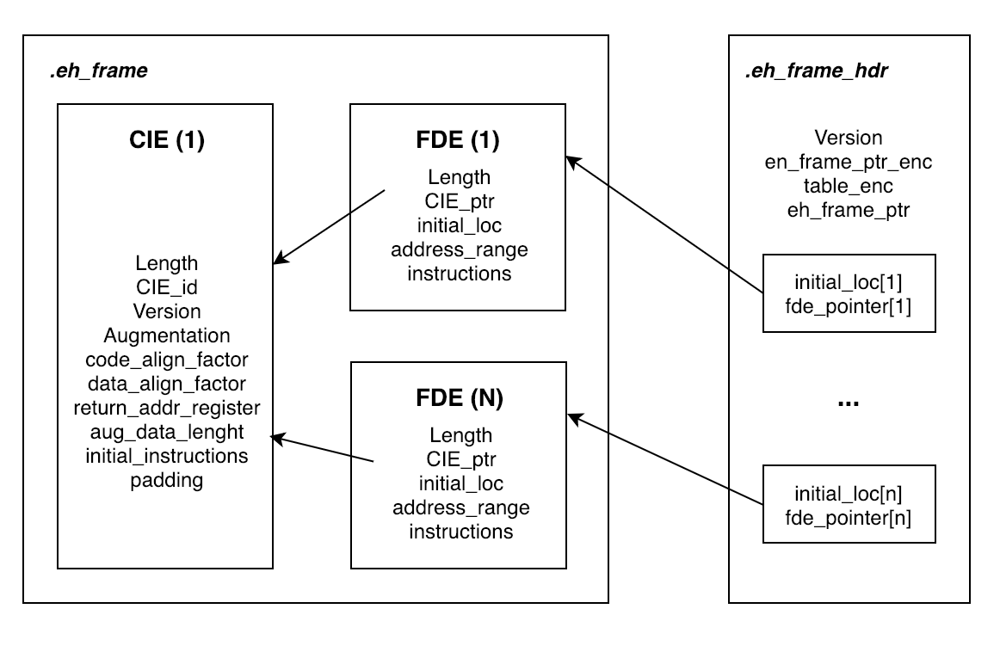

- 00 导读 如何打造高质量的应用？.md
- 00 开篇词 焦虑的移动开发者该如何破局？.md
- 01 崩溃优化（上）：关于“崩溃”那些事儿.md
- 02 崩溃优化（下）：应用崩溃了，你应该如何去分析？.md
- 03 内存优化（上）：4GB内存时代，再谈内存优化.md
- 04 内存优化（下）：内存优化这件事，应该从哪里着手？.md
- 05 卡顿优化（上）：你要掌握的卡顿分析方法.md
- 06 卡顿优化（下）：如何监控应用卡顿？.md
- 06补充篇 卡顿优化：卡顿现场与卡顿分析.md
- 07 启动优化（上）：从启动过程看启动速度优化.md
- 08 启动优化（下）：优化启动速度的进阶方法.md
- 09 I_O优化（上）：开发工程师必备的I_O优化知识.md
- 10 I_O优化（中）：不同I_O方式的使用场景是什么？.md
- 11 I_O优化（下）：如何监控线上I_O操作？.md
- 12 存储优化（上）：常见的数据存储方法有哪些？.md
- 13 存储优化（中）：如何优化数据存储？.md
- 14 存储优化（下）：数据库SQLite的使用和优化.md
- 15 网络优化（上）：移动开发工程师必备的网络优化知识.md
- 16 网络优化（中）：复杂多变的移动网络该如何优化？.md
- 17 网络优化（下）：大数据下网络该如何监控？.md
- 18 耗电优化（上）：从电量优化的演进看耗电分析.md
- 19 耗电优化（下）：耗电的优化方法与线上监控.md
- 20 UI 优化（上）：UI 渲染的几个关键概念.md
- 21 UI 优化（下）：如何优化 UI 渲染？.md
- 22 包体积优化（上）：如何减少安装包大小？.md
- 23 包体积优化（下）：资源优化的进阶实践.md
- 24 想成为Android高手，你需要先搞定这三个问题.md
- 25 如何提升组织与个人的研发效能？.md
- 26 关于编译，你需要了解什么？.md
- 27 编译插桩的三种方法：AspectJ、ASM、ReDex.md
- 28 大数据与AI，如何高效地测试？.md
- 29 从每月到每天，如何给版本发布提速？.md
- 30 数据评估（上）：如何实现高可用的上报组件？.md
- 31 数据评估（下）：什么是大数据平台？.md
- 32 线上疑难问题该如何排查和跟踪？.md
- 33 做一名有高度的移动开发工程师.md
- 34 聊聊重构：优秀的架构都是演进而来的.md
- 35 Native Hook 技术，天使还是魔鬼？.md
- 36 跨平台开发的现状与应用.md
- 37 移动开发新大陆：工作三年半，移动开发转型手游开发.md
- 38 移动开发新大陆：Android音视频开发.md
- 39 移动开发新大陆： 边缘智能计算的趋势.md
- 40 动态化实践，如何选择适合自己的方案？.md
- 41 聊聊Flutter，面对层出不穷的新技术该如何跟进？.md
- 42 Android开发高手课学习心得.md
- Android JVM TI机制详解（内含福利彩蛋）.md
- Android工程师的“面试指南”.md
- Native下如何获取调用栈？.md
- 专栏学得苦？可能你还需要一份配套学习书单.md
- 专栏学得苦？可能是方法没找对.md
- 程序员修炼之路 设计能力的提升途径.md
- 练习Sample跑起来 ASM插桩强化练习.md
- 练习Sample跑起来 唯鹿同学的练习手记 第1辑.md
- 练习Sample跑起来 唯鹿同学的练习手记 第2辑.md
- 练习Sample跑起来 唯鹿同学的练习手记 第3辑.md
- 练习Sample跑起来 热点问题答疑第1期.md
- 练习Sample跑起来 热点问题答疑第2期.md
- 练习Sample跑起来 热点问题答疑第3期.md
- 练习Sample跑起来 热点问题答疑第4期.md
- 结束语 移动开发的今天和明天.md
- 聊聊Framework的学习方法.md
Native下如何获取调用栈？
你好，我是simsun，曾在微信从事Android开发，也是开源爱好者、Rust语言“铁粉”。应绍文邀请，很高兴可以在“高手课”里和你分享一些编译方面的底层知识。
当我们在调试Native崩溃或者在做profiling的时候是十分依赖backtrace的，高质量的backtrace可以大大减少我们修复崩溃的时间。但你是否了解系统是如何生成backtrace的呢？今天我们就来探索一下backtrace背后的故事。
下面是一个常见的Native崩溃。通常崩溃本身并没有任何backtrace信息，可以直接获得的就是当前寄存器的值，但显然backtrace才是能够帮助我们修复Bug的关键。
pid: 4637, tid: 4637, name: crasher >>> crasher <<<
signal 6 (SIGABRT), code -6 (SI_TKILL), fault addr --------
Abort message: 'some_file.c:123: some_function: assertion "false" failed'
r0 00000000 r1 0000121d r2 00000006 r3 00000008
r4 0000121d r5 0000121d r6 ffb44a1c r7 0000010c
r8 00000000 r9 00000000 r10 00000000 r11 00000000
ip ffb44c20 sp ffb44a08 lr eace2b0b pc eace2b16
backtrace:
#00 pc 0001cb16 /system/lib/libc.so (abort+57)
#01 pc 0001cd8f /system/lib/libc.so (__assert2+22)
#02 pc 00001531 /system/bin/crasher (do_action+764)
#03 pc 00002301 /system/bin/crasher (main+68)
#04 pc 0008a809 /system/lib/libc.so (__libc_init+48)
#05 pc 00001097 /system/bin/crasher (_start_main+38)
在阅读后面的内容之前，你可以先给自己2分钟时间，思考一下系统是如何生成backtrace的呢？我们通常把生成backtrace的过程叫作unwind，unwind看似和我们平时开发并没有什么关系，但其实很多功能都是依赖unwind的。举个例子，比如你要绘制火焰图或者是在崩溃发生时得到backtrace，都需要依赖unwind。
书本中的unwind
1. 函数调用过程
如果你在大学时期修过汇编原理这门课程，相信你会对下面的内容还有印象。下图就是一个非常标准的函数调用的过程。

首先假设我们处于函数main()并准备调用函数foo()，调用方会按倒序压入参数。此时第一个参数会在调用栈栈顶。
调用invoke foo()伪指令，压入当前寄存器EIP的值到栈，然后载入函数foo()的地址到EIP。
此时，由于我们已经更改了EIP的值（为foo()的地址），相当于我们已经进入了函数foo()。在执行一个函数之前，编译器都会给每个函数写一段序言（prologue），这里会压入旧的EBP值，并赋予当前EBP和ESP新的值，从而形成新的一个函数栈。
下一步就行执行函数foo()本身的代码了。
结束执行函数foo() 并准备返回，这里编译器也会给每个函数插入一段尾声（epilogue）用于恢复调用方的ESP和EBP来重建之前函数的栈和恢复寄存器。
执行返回指令（ret），被调用函数的尾声（epilogue）已经恢复了EBP和ESP，然后我们可以从被恢复的栈中依次pop出EIP、所有的参数以及被暂存的寄存器的值。
读到这里，相信如果没有学过汇编原理的同学肯定会有一些懵，我来解释一下上面提到的寄存器缩写的具体含义，上述命名均使用了x86的命名方式。讲这些是希望你对函数调用有一个初步的理解，其中有很多细节在不同体系结构、不同编译器上的行为都有所区别，所以请你放松心情，跟我一起继续向后看。
EBP：基址指针寄存器，指向栈帧的底部。- 在ARM体系结构中，R11（ARM code）或者R7（Thumb code）起到了类似的作用。在ARM64中，此寄存器为X29。- ESP：栈指针寄存器，指向栈帧的栈顶 ， 在ARM下寄存器为R13。- EIP：指令寄存器，存储的是CPU下次要执行的指令的地址，ARM下为PC，寄存器为R15。
2. 恢复调用帧
如果我们把上述过程缩小，站在更高一层视角去看，所有的函数调用栈都会形成调用帧（stack frame），每一个帧中都保存了足够的信息可以恢复调用函数的栈帧。

我们这里忽略掉其他不相关的细节，重点关注一下EBP、ESP和EIP。你可以看到EBP和ESP分别指向执行函数栈的栈底和栈顶。每次函数调用都会保存EBP和EIP用于在返回时恢复函数栈帧。这里所有被保存的EBP就像一个链表指针，不断地指向调用函数的EBP。 这样我们就可以此为线索，十分优雅地恢复整个调用栈。

这里我们可以用下面的伪代码来恢复调用栈：
void debugger::print_backtrace() {
auto curr_func = get_func_from_pc(get_pc());
output_frame(curr_func);
auto frame_pointer = get_register_value(m_pid, reg::rbp);
auto return_address = read_mem(frame_pointer+8);
while (dwarf::at_name(curr_func) != "main") {
curr_func = get_func_from_pc(ret_addr);
output_frame(curr_func);
frame_pointer = read_mem(frame_pointer);
return_address = read_mem(frame_pointer+8);
}
但是在ARM体系结构中，出于性能的考虑，天才的开发者为了节约R7/R11寄存器，使其可以作为通用寄存器来使用，因此无法保证保存足够的信息来形成上述调用栈的（即使你向编译器传入了“-fno-omit-frame-pointer”）。比如下面两种情况，ARM就会不遵循一般意义上的序言（prologue），感兴趣的同学可以具体查看APCS Doc。
函数为叶函数，即在函数体内再没有任何函数调用。
函数体非常小。
Android中的unwind
我们知道大部分Android手机使用的都是ARM体系结构，那在Android中需要如何进行unwind呢？我们需要分两种情况分别讨论。
1. Debug版本unwind
如果是Debug版本，我们可以通过“.debug_frame”（有兴趣的同学可以了解一下DWARF）来帮助我们进行unwind。这种方法十分高效也十分准确，但缺点是调试信息本身很大，甚至会比程序段（.TEXT段）更大，所以我们是无法在Release版本中包含这个信息的。
DWARF 是一种标准调试信息格式。DWARF最早与ELF文件格式一起设计, 但DWARF本身是独立的一种对象文件格式。本身DAWRF和ELF的名字并没有任何意义（侏儒、精灵，是不是像魔兽世界的角色 :)），后续为了方便宣传，才命名为Debugging With Attributed Record Formats。引自wiki
2. Release版本unwind
对于Release版本，系统使用了一种类似“.debug_frame”的段落，是更加紧凑的方法，我们可以称之为unwind table，具体来说在x86和ARM64平台上是“.eh_frame”和“.eh_frame_hdr”，在ARM32平台上为“.ARM.extab”和“.ARM.exidx”。
由于ARM32的标准早于DWARF的方法，所有ARM使用了自己的实现，不过它们的原理十分接近，后续我们只讨论“.eh_frame”，如果你对ARM32的实现特别感兴趣，可以参考ARM-Unwinding-Tutorial。
“.eh_frame section”也是遵循DWARF的格式的，但DWARF本身十分琐碎也十分复杂，这里我们就不深入进去了，只涉及一些比较浅显的内容，你只需要了解DAWRF使用了一个被称为DI（Debugging Information Entry）的数据结构，去表示每个变量、变量类型和函数等在debug程序时需要用到的内容。
“.eh_frame”使用了一种很聪明的方法构成了一个非常大的表，表中包含了每个程序段的地址对应的相应寄存器的值以及返回地址等相关信息，下面就是这张表的示例（你可以使用readelf --debug-dump=frames-interp去查看相应的信息，Release版中会精简一些信息，但所有帮助我们unwind的寄存器信息都会被保留）。

“.eh_frame section”至少包含了一个CFI（Call Frame Information）。每个CFI都包含了两个条目：独立的CIE（Common Information Entry）和至少一个FDE（Frame Description Entry）。通常来讲CFI都对应一个对象文件，FDE则描述一个函数。
“.eh_frame_hdr section”包含了一系列属性，除了一些基础的meta信息，还包含了一列有序信息（初始地址，指向“.eh_frame”中FDE的指针），这些信息按照function排序，从而可以使用二分查找加速搜索。

总结
总的来说，unwind第一个栈帧是最难的，由于ARM无法保证会压基址指针寄存器（EBP）进栈，所以我们需要借助一些额外的信息（.eh_frame）来帮助我们得到相应的基址指针寄存器的值。即使如此，生产环境还是会有各种栈破坏，所以还是有许多工作需要做，比如不同的调试器（GDB、LLDB）或者breakpad都实现了一些搜索算法去寻找潜在的栈帧，这里我们就不展开讨论了，感兴趣的同学可以查阅相关代码。
扩展阅读
下面给你一些外部链接，你可以阅读GCC中实现unwind的关键函数，有兴趣的同学可以在调试器中实现自己的unwinder。
© 2019 - 2023 Liangliang Lee. Powered by gin and hexo-theme-book.